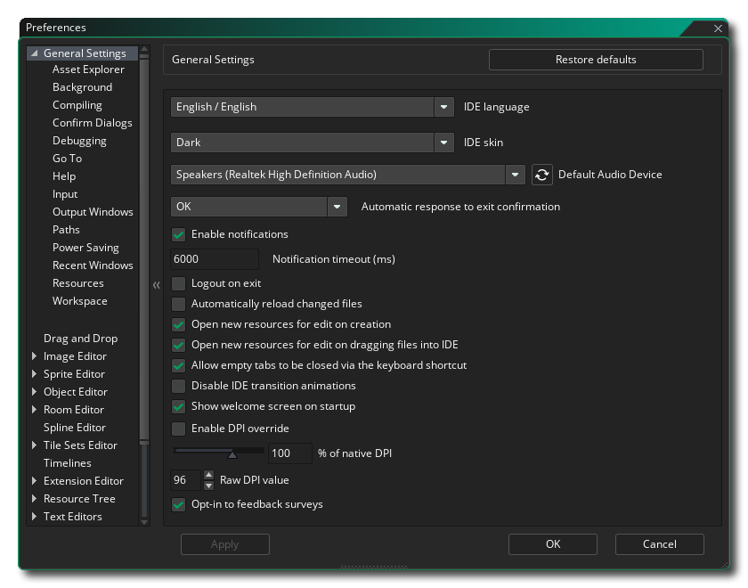
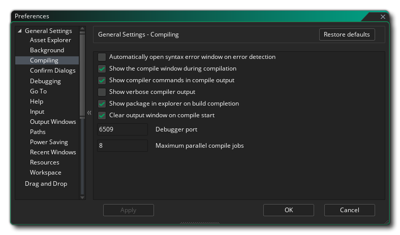
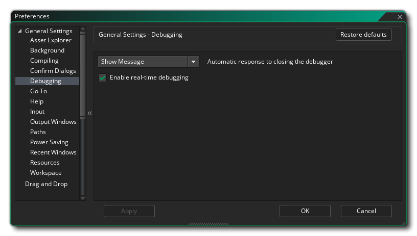
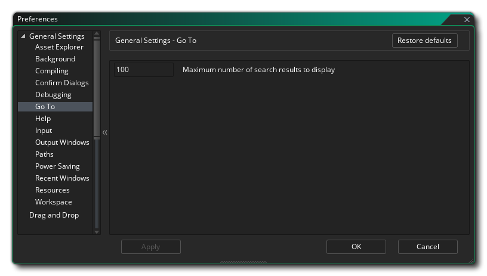
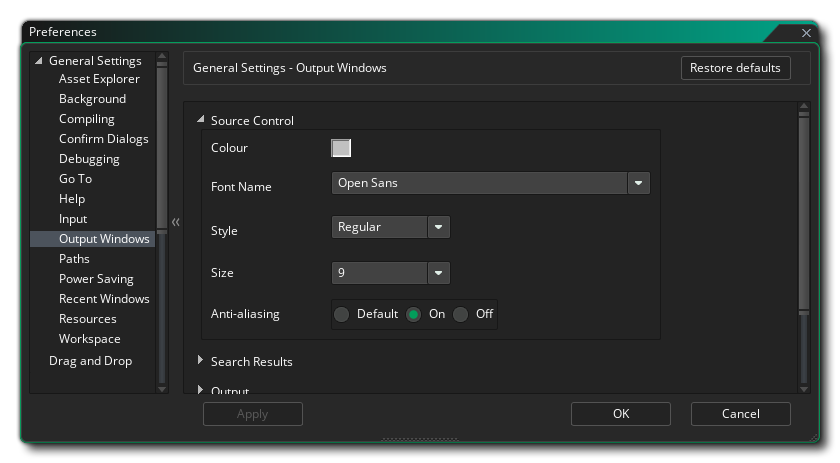
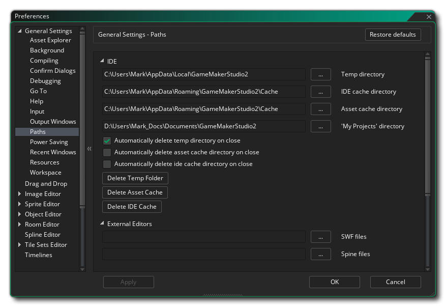

常规偏好设置 被用于定义GameMaker Studio 2 IDE的常规行为。最常见的几项已经被列在主页面上，而其他的项目被分到多个的子目录下，我们会在后文深入解释。
- IDE 语言：此选项允许你从提供的选项列表中选择IDE语言。默认为英语。
- IDE 皮肤：在这里，你可以选择IDE的不同皮肤。默认地GameMaker Studio 2本身自带两种皮肤，一个是浅色皮肤，一个是深色皮肤，初始安装时会使用深色皮肤。
- 默认音频设备：在此处你可以选择GameMaker Studio 2 IDE所使用的默认音频设备。你可以通过点击刷新（Refresh）按钮来刷新设备列表。

- 自动响应退出确认：此选项允许你设置当你退出 GameMaker Studio 2 时是否弹出提示。默认为显示消息，但是可以设置为跳过。
- 启用消息通知：勾选此项IDE将在有新的运行库等情况的时候显示通知。该选项默认为“开”。
- 通知超时（毫秒）：此选项设置通知显示的时长（毫秒）。默认为6000。
- 自动重新加载已更改的文件：如果勾选该选项，IDE将自动扫描并检查文件是否在 GameMaker Studio 2 之外的位置被修改（译者注：不在IDE内修改的情况），如果是则重新加载它们。
- 创建时总是打开新资源的编辑窗口：如果勾选该选项，每次在资源树中创建新资源，都会自动打开相应的资源编辑器。该选项默认勾选，取消勾选意味着你必须手动打开所有新建资源。
- 在将文件拖入IDE时打开新资源进行编辑：某些资源（如精灵或声音）可以拖放到 GameMaker Studio 2 IDE 的主工作区中，并将添加到资源树中作为新资源使用。默认地，当这种情况发生时，相应的资源编辑器会被打开，而解除该选项将会阻止编辑器被自动打开，并且你需要手动地打开他们。
- 允许通过键盘快捷键关闭空的选项卡: 你可以使用键盘快捷键
 /
/ + W 关闭任何已经打开的选项卡，但是如果你禁用该选项快捷键将不再有效。该选项默认为启用。
+ W 关闭任何已经打开的选项卡，但是如果你禁用该选项快捷键将不再有效。该选项默认为启用。
- 禁用IDE过渡动画：GameMaker Studio 2 IDE 在打开窗口等情况会有过渡动画，然而并不是每个人都喜欢过渡动画，如果在旧电脑或性能不足的电脑上禁用该选项，则可能会提升性能。你可以在此处禁用他们，它们默认是打开的。
- 在启动时显示欢迎页面：该选项默认为开，并且只是要求GameMaker Studio 2在启动程序的时候显示一个简短的启动画面。取消选中此项会阻止该画面的显示。
- 启用DPI改写：此选项允许你自己改写默认的DPI设置。你必须首先启用此选项，然后设置 原始DPI改写 值（默认为96）或设置 本地DPI百分比，一旦更改，将提示你重启IDE，并可能需要你保存当前打开的项目。
- 选择性反馈调查：当勾选此选项，意味着你告诉 GameMaker Studio 2 你希望参与反馈调查，这意味着在工作时偶尔会显示关于你正在工作的区域的信息，并请求评级和反馈。<片段 5944>该选项默认打开。
上述这些选项是常规（General）偏好设置里可用的主要选项，但在下面列出的子目录中还有一些额外的可用选项：

当你希望为一个物体添加精灵或者在拖拽按钮（Drag and Drop）中选用一个字体又或者是其他许多场合下，资产浏览器总会呈现到你的眼前：
默认地，它会同时显示一个树状视图（左侧）和一个列表视图（右侧），但通过使用该设定，你可以选择只显示一个或另一个。

背景偏好设置用于处理工作区的背景、显示什么背景以及背景如何去显示。选项有：
- 背景图（Background Image）：这是图像文件，用在不同的工作区作为背景。这里会提供一张默认图像，并且默认状态下是启用的，但是你也可以在这里选择你自己的图像。你可以选择的图像格式有*.png、*.gif、*.jpg、*.jpeg、*.tif、*.tiff、*.ico、*.bmp、*.2bp以及*.mdi，但是请注意，无论初始的文件格式如何，所有被使用的文件都会被另存为*.png文件，因此动画*.gif文件只会呈现为单张初始帧图像。
- 图像缩放（Image Scaling）：该选项控制了背景图像在各个工作区下如何被缩放。选项有：
- 拉伸（Stretch） - 图像将会被拉伸以适合工作区，拉伸尺度取决于可见的停靠栏。
- 平铺 - 图像将平铺以覆盖工作区。
- 最适合 - 图像将会被按比例缩放来适配工作区，如果不是1:1适配则会在边缘留白。
- 桌面拉伸 - 该背景图将会覆盖整个工作区，无视所有可见的停靠栏。
- 在工作区上显示背景图片：此选项控制所选背景图片是否显示。该选项默认打开（On）。
在编译游戏以进行测试、创建程序包的时候，编译偏好设置处理与输出相关的某些选项，以及编译过程的某些区域。选项有：
- 在错误检测时自动打开语法错误窗口：编译时启用或禁用语法错误通知。该选项默认关闭。
- 在编译期间显示编译窗口：默认情况下，编译项目时将显示编译窗口，即使在编译停靠栏已经关闭的时候（编译的时候它会打开）。取消选中此选项则会关闭这个行为，而如果打开，编译窗口将会出现。
- 在编译输出中显示编译器命令：此选项默认勾选，并强制编译器在编译窗口中显示所有相关命令。取消勾选该选项会使得输出内容更简短，信息量更少。
- 显示详细的编译器输出：勾选此选项会显示与编译进程相关的额外命令。通常，这些内容仅在调试时需要，并且在你遇到问题的时候可以请求支持。该选项默认为关（并且推荐为关）。
- 构建完成时在资源管理器中显示程序包：勾选此选项时，GameMaker Studio 2 会在最终可执行文件包创建的位置打开系统资源管理器窗口。此选项默认打开。
- 编译开始时清除输出窗口：默认情况下编译器窗口会在每次构建开始时清除之前的编译输出窗口的所有信息，但是取消勾选此选项可以保留之前的编译器日志。该选项默认为开，并且这也是推荐选项，因为过多的编译器日志会拖慢编译时间。
- 调试端口：设置调试模块使用的端口号码。默认值为6509。
- 最大并行编译作业：该值设置编译时使用的CPU核心的 最大 值。默认值为8，通常你不需要更改这个值，但是如果你在笔记本电脑或低配电脑上可能希望降低这个值。默认值为8。

确认对话框偏好设置用于处理一些在GameMaker Studio 2 IDE中执行某些动作时的常规弹窗确认信息。选项有：
- 通过键盘快捷键自动响应关闭工作区：上述快捷键可以关闭任何打开的选项卡，但是有时候你可能会意外地关闭你需要的空选项卡。为了防止这种情况，你可以将该选项设置为“显示消息”（Show message，也是默认选项）来询问你是否真的想要关掉那个选项卡。另一些选项之一为“否”（No），如果快捷键被使用了，则可能什么也不做，再就是“确认（Okay）”，表示关闭选项卡而不显示任何信息。
- 自动响应重新启动正在运行的构建：当你重新启动一个构建，而另一个之前的构建仍在运行时，将询问你是否希望先停止当前构建。解除勾选此项会抑制该消息的产生并强制GameMaker Studio 2认为你已经点击“确认”（Okay）作为回应了。该选项默认为“显示消息”。
- 尝试调试YYC时自动响应警告：YYC目标（The YYC target ）编译为本机代码，因此不能使用内置调试器进行调试。当你试图在YYC目标上使用调试器时，你将得到一个警告，告知你这一点，并且项目将会采用VM（虚拟机）进行编译。此选项默认为“显示消息”，选择“确定”会禁止显示该警告。
- 自动响应重置项目布局：当你选择重启项目布局（从 布局菜单），默认情况下会显示一条警告消息，说明这将如何关闭打开的资源窗口。然而通过将此项选择为“是”，你可以禁用该警告消息并自动重置布局，而如果选“否”则什么也不会发生。默认值为“显示消息”。
- 自动响应关闭匿名统计：当你在 常规游戏选项 中禁用匿名游戏统计信息时，会显示一条警告信息，询问并让你仔细考虑该选项。你可以选择“是”来禁用该信息，或者选择“否”而不做任何事情。默认值为“显示消息”。
这里的偏好设置与 GameMaker Studio 2 调试器有关，有如下选项：
- 自动响应关闭调试器：此选项允许你在关闭调试器时设置自动响应。如果设置为“显示消息”，则当关闭调试器时，将显示对话框，而将其设置为“是”或“否”则不会显示对话框并执行指定任务。
- 应用实时调试: 此选项允许你从IDE运行游戏项目时实时调试游戏项目。此选项默认勾选。
这个偏好设置的 前往 窗口，可以使用键盘快捷键
- 要显示的最大搜索结果数：该选项控制着你使用前往搜索窗口时返回搜索结果的最大数量。

帮助文档被设计成向网页那样的操作方式并且因此需要使用 GameMaker Studio 2 的微型网络服务器（Micro Web Server，MWS），或者也可以使用外部浏览器。能够在这里被修改的设置有：
- 帮助文档端口：设置访问文档微型网络服务器时使用哪个端口。默认值为 51291。
- 使用外部浏览器获取帮助：如果勾选此选项将使用系统默认浏览器打开帮助文档。该选项默认为开，关闭该选项则会强制帮助文件在IDE的工作区内打开。

输入偏好设置用于控制IDE中某些需要鼠标和键盘输入方面的控制。可用的选项有：
- 双击延迟时间（毫秒）：IDE中的某些位置要求一次较慢的双击才能发挥作用，比如重命名一个资源（快速双击会打开该资源的编辑器，而慢双击才允许你为它重命名）。此选项允许你设置响应速度，默认为 500 毫秒。
- 滚动锁定时间（毫秒）：此选项设置 GameMaker Studio 2 正在重叠的滚动窗口之间应该等待的时间。必要地，当你滚动窗口“A”时，光标可能会悬停在另一个可滚动的窗口“B”的部分区域上，因此这个设置定义了在你停止滚动“A”窗口之后需要多长时间你才能滚动“B”窗口，这样你就不会不小心地滚动到别的面板了。默认值为500毫秒。
- 滚动速度：控制不同工作区内的滚动速度。默认值为1。
- 非最大化桌面的选项卡拖动距离（像素）：当你将工作区选项卡从IDE默认位置拖离时，如果此时只有一个工作区处于活动状态，那么 GameMaker Studio 2 窗口将取消最大化，并随着鼠标移动（如果有多个工作区处于活动状态，将创建新的IDE实例来保持工作区）。此设置控制在工作区识别之前拖拽选项卡的距离，默认值为50像素。
- 与窗口内容交互的最小缩放级别（%）：此选项设置鼠标不再能与工作区窗口交互的缩放截止点（如：添加节点、拖拽窗口等）。默认值为40.
- 鼠标滚轮缩放需要 Ctrl 键：勾选此选项所有编辑器（和主工作区）都需要使用
进行缩放，否则 只 需要使用鼠标滚轮
输出窗口偏好设置控制着IDE中各个输出窗口的各种颜色和格式。每一个不同的窗口都共有相同的一组选项，列举如下：
- 颜色（Colour）：文本被写入该窗口所使用的默认颜色。
- 字体名称（Font Name）：所使用的字体名称（可用的字体取决于安装在你系统上的字体）。
- 字体样式（Style）：所使用的字体样式，比如粗体（Bold）或斜体（Italic）（请注意，不是所有窗口都会允许相同的字体样式，并且这也取决于所使用的字体）。
- 大小（Size）：用于所给定的输出窗口的字体大小。
- 抗锯齿：这里可以设置输出窗口字体渲染是否抗锯齿。你可以选择使用默认（Use Default）来让IDE决定，也可以通过选择相应选项来强制它开启（On）或关闭（Off）。
路径偏好设置（Path Preference）用于控制GameMaker Studio 2中的一些要素以及你所要求的外部编辑器（External Editors）所需的各种文件路径。在IDE中有如下选项：
- 临时目录：储存所有临时文件夹的位置。默认为\Users\<Username>\AppData\Local\Temp\GameMakerStudio2。
- IDE 缓存目录：保存IDE缓存的目录位置。默认为 \Users\<Username>\AppData\Roaming\GameMakerStudio2-Dev\Cache。
- 资产缓存目录：保存每个项目的资产缓存的位置。默认为 \Users\<Username>\AppData\Roaming\GameMakerStudio2-Dev\Cache。
- “我的项目”目录：GameMaker Studio 2 创建新项目时的默认目录。默认为 \Users\<Username>\Documents\GameMakerStudio2。
- 关闭时自动删除临时目录：勾选此选项 GameMaker Studio 2 会自动删除临时目录（如：编译等）。该选项默认为开，取消勾选此项会将其关闭（意味着你需要以后手动地删除所有的临时文件）。
- 关闭时自动删除资产缓存目录：如果勾选此选项，退出 GameMaker Studio 2 时会删除资产编译器缓存目录。该选项默认关闭，勾选它则意味着每次加载项目时都需要重新构建缓存（时间取决于游戏的大小）。
- 关闭时自动删除IDE缓存目录：如果勾选此选项，退出 GameMaker Studio 2 时会删除IDE缓存目录。该选项默认关闭，勾选它则意味着每次启动 GameMaker Studio 2 时都需要重新构建缓存。
- 删除临时目录：点击该按钮将会删除该工程的临时文件夹。
- 删除资产缓存：点击该按钮将会删除该工程的资产缓存。
- 删除IDE缓存：点击该按钮将会删除IDE缓存。
还有下列用于设定外部编辑器路径的选项：
- SWF文件的外部编辑器/查看器（Path to external editor/viewer for SWF files）：如果你要处理SWF类型的精灵，你可以将该选项设置为你喜欢的查看器/编辑器的路径，并且当你在精灵编辑器（Sprite Editor）中点击编辑精灵（Edit Sprite）按钮的时候，它会打开给定的程序。此处默认值为无路径。
- Spine文件的外部编辑器/查看器（Path to external editor/viewer for Spine files）：如果你要处理Spine类型的精灵，你可以将该选项设置为你喜欢的查看器/编辑器的路径，并且当你在精灵编辑器（Sprite Editor）中点击编辑精灵（Edit Sprite）按钮的时候，它会打开给定的程序。此处默认值为无路径。

省电管理偏好设置（Power Saving Preferences）将会影响生成 GameMaker Studio 2 IDE 所使用的 CPU 及 GPU 功率（必要时这些设置会在程序运行时降低基本帧率及功耗）。选项有：
- 使用交流电源时帧率（%）：当使用交流电供电时，IDE的帧率。默认值为100%。
- 使用电池时帧率（%）：当使用电池供电时，IDE的帧率。默认值为35%。
- 应用失去焦点时的背景帧率（%）：当 GameMaker Studio 2 失去焦点时IDE的频率。默认值为15%。
- 文件监视频率（毫秒）：文件监视器运行的频率。默认是2000。
- 笔记本电脑文件监视频率（毫秒）：文件监视器在笔记本模式下运行的频率。默认是5000。

这里的偏好设置包含 最近窗口 列表将如何显示项目：
- 在项目加载时自动打开：启用该选项，将在加载新项目时显示最近窗口列表。默认禁用。
- 将焦点窗口移至顶部：启用该选项并点击最近窗口列表中的任一项时，选定的项将被移动到列表的顶部。默认禁用。
- 仅显示当前打开的窗口：启用该选项时，最近窗口列表会删除不再在工作区中打开的项（即：关闭窗口会从列表中删除这些项）。默认禁用。
- 可显示窗口的最大数量：设置最近窗口列表中显示之前打开窗口的最大数量。默认值为10。

此处的设置包含了某些资源该如何在工程中被绘制出来。
- 新项目的初始默认绘制颜色：当你使用 GameMaker Studio 2 的函数或拖拽按钮（DnD™）动作调用字体或绘制形状时若没有指定绘制颜色，则会使用此处的颜色。默认颜色为白色（white，$ FFFFFFFF）。

此处的设置将影响到你能如何在GameMaker Studio 2各个工作区之间游动浏览。选项有：
- 工作区键盘导航度范围：在工作区中，你可以为不同的物体和资源打开多个窗口，因此为了在它们之间快速移动，可以使用 键盘快捷键
+ <方向键> 在它们之间移动。假设工作区内的该窗口没有在IDE上按照网格吸附，那么在你按下可行的8个方向的方向键的时候IDE就必须选择你打算要看的窗口，而该选项就允许你设置所使用的“浏览角度”（Look Angle）。默认值为40°。 ###为方便理解本条目可能需要补一张图###
- 工作区连接线的面板之间的列间隔量（像素）：工作区元素通常彼此“连接”（例如，代码编辑器连接到事件编辑器，而事件编辑器连接到物体编辑器），该选项设置任何两个连接窗口之间的水平距离。默认值为30px（像素）。
- 工作区连接线的面板之间的行间隔量（像素）：如上所述，工作区元素通常彼此“连接”，该选项设置任何两个连接窗口之间的垂直距离。默认值为20px（像素）。
- 工作区连接线渲染段数量：这里可以设置渲染工作区连接线的最大段数。降低该值可能有助于在低配置机器上发挥更好的性能。默认值为20。
- 工作区连接线颜色：设置工作区连接线的颜色。默认颜色为$99DD00，alpha 值为 153（$99）。
- 工作区键盘导航是否重置缩放：如上所述，可以使用键盘快捷键在工作区内的窗口之间跳动。你还可以使用
放大和缩小工作区。设置该选项将意味着如果你的工作区被缩放了之后又要使用快捷键跳转另一个窗口，则工作区会自动退回到1:1的缩放视图，并且居中所选窗口。该选项默认为关。
- 允许工作区连接线交叉：当启用该选项时允许工作区连接线交叉和重叠。该选项默认关闭。